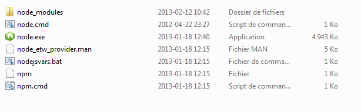
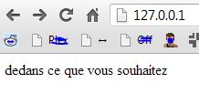
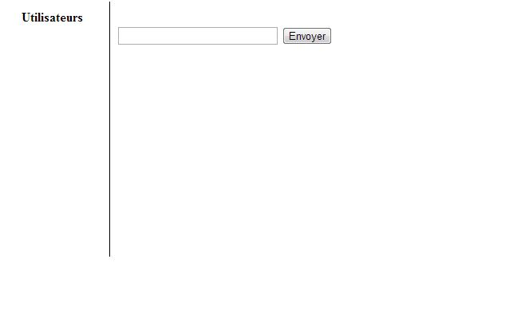

Introduction
Kossé cé ço node.js ?
Node.js est un serveur utilisant comme language principal le Javascript.
Quel est l'intérêt d'utiliser node.js ?
Node.js permet à la fois de servir des pages HTML classiques et d'exécuter du code en temps réel. Cela permet d'établir des connexions directes avec les clients, et ainsi d'exécuter des commandes en temps réel.
Objectif du tutoriel
Nous allons réaliser un mini-chat, afin de discuter librement durant nos cours !
Étapes
- Serveur de base node.js
- Page HTML de base
- Connexion socket
Serveur de base
Téléchargement
Pour cette étape, téléchargez l'installateur sur le site de node.js ou la version portable ici puis extrayez l'archive.
Votre installation devrait ressembler à ceci :

### Installation des plugins
Créez un fichier install.bat puis insérez les lignes suivantes dedans :
npm install express
npm install socket.io
Éxecutez-le, félicitations, vous venez d'installer 2 plugins !
### Lancement
Le fichier "node.cmd" servira à lancer votre serveur. Éditez-le et ajoutez :
@echo off
set PATH=%PATH%;%cd%
set NODE_PATH=%cd%\node_modules\npm\node_modules;%cd%\node_modules\npm
node app.js
cmd
puis créez le fichier app.js dans le même répertoire.
### Serveur de base
Dans le fichier app.js, insérez les lignes suivantes :
var express = require('express'),
app = express()
, http = require('http')
, server = http.createServer(app)
, io = require('socket.io').listen(server);
// listen for new web clients:
server.listen(80);
// Routage
app.get('/', function (req, res) {
res.sendfile(__dirname + '/index.html');
});
Page HTML simple
Pas mal simple même
Maintenant que vous avez un beau serveur, il est temps de créer une page !
Créez un fichier index.html et écrivez dedans ce que vous souhaitez. Exécutez node.cmd puis rendez vous à l'adresse 127.0.0.1 dans votre navigateur favoris (de préférence Chrome) !
Vous devriez obtenir un résultat similaire au suivant :

### Une page un peu moins simple
Maintenant que notre serveur fonctionne, il est temps de s'occuper du côté client.
Tout d'abord, faites-vous une jolie (laide) petite interface :
Ce qui devrait vous donner à peu prêt ceci :

##Connexion socket
Maintenant que votre interface est faite, rajoutez-y un peu de Javascript.
Tout d'abord, nous devons nous connecter au serveur.
var ip = window.location.hostname;
var socket = io.connect(ip);
Ensuite, nous ajoutons un écouteur sur l'évènement 'connect', qui signifie une connexion établie avec le serveur.
//Lors de la connexion avec le serveur, ceci est executé
socket.on('connect', function(){
//On demande à l'utilisateur son pseudo afin de l'envoyer au serveur
socket.emit('adduser', prompt("Quel est votre pseudo?"));
});
Puis on ajoute les écouteurs d'actualisation des utilisateurs et du chat.
//Lorsque le serveur envoie des données via 'updatechat', on rafrachit les données affichées à l'utilisateur.
socket.on('updatechat', function (username, data) {
$('#conversation').append(''+ username + ': ' + data + '
');
});
//Lorsque le serveur envoie un 'updateusers', on raffraichi la liste des utilisateurs affichée à l'utilisateur.
socket.on('updateusers', function(data) {
$('#users').empty();
$.each(data, function(key, value) {
$('#users').append('' + key + '
');
});
});
Et finalement on ajoute les contrôles utilisateur.
//Lors du chargement de la page (jQuery de base)
$(function(){
//On fait un focus sur le champ de texte
$('#data').focus();
//On affiche l'IP du serveur
$('#ip').append('IP : ' + ip);
//Lorsque l'on clique sur Envoyer
$('#datasend').click( function() {
var message = $('#data').val();
$('#data').val('');
//On envoie la commande 'sendchat' avec comme contenu le message
socket.emit('sendchat', message);
});
//Lorsque l'utilisateur appuie sur Enter
$('#data').keypress(function(e) {
if(e.which == 13) {
$(this).blur();
$('#datasend').focus().click();
$('#data').focus();
}
});
});
Maintenant, lancez votre serveur puis rendez-vous sur 127.0.0.1, votre application est prête !
Fin de la présentation
Merci de votre attention !
Oui oui c'est bon vous pouvez retourner sur Facebook...
Réalisé par Erwan d'Orgeville